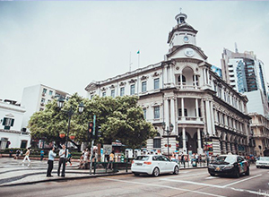
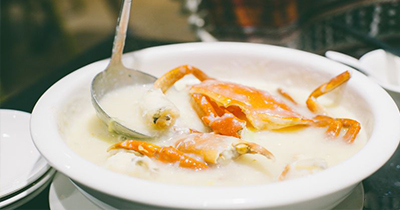
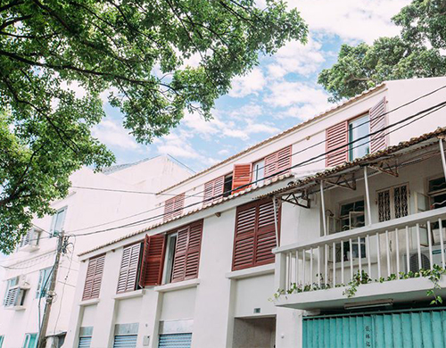
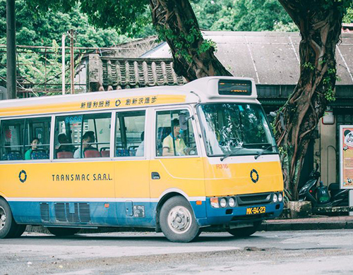

时间：2016.09
时间：2016.09
 天数：3天
天数：3天
 人均：3000-5000（元）
人均：3000-5000（元）
 澳门
澳门
澳门
原来你是这样的澳门
吃逛赌，澳门的必备老三样
文化的信仰和历史的痕迹
文艺在路环，一路环行

D第一天
吃逛赌，澳门的必备老三样
朦朦胧胧的微弱灯光，照在发绿并且破旧斑驳的墙面上，有一些脱落的痕迹，从吱吱作响的床上起来，昏昏沉沉的走向卫生间，卫生间的布局出奇的空旷，洗脸台、浴缸、马桶各自被分布在角落，中间留出一大块空间，吓得我有点害怕走进去。
续
转眼，我和旺先森已在去往澳门的飞机上，从晴空万里的杭州飞往澳门的途中，天气逐渐变差，飞机还算平稳的降落在澳门，跟机长报告的一样，整个澳门都是一片灰蒙蒙的雨天，顿时对一切都失去了兴致。此时，唯一能安抚我的唯有食物了，这家皇冠小馆看似普通，名头却不小，就因为它是米其林推荐餐厅。刚走进餐厅就看到一墙的明星合影海报，简直就是餐厅的活招牌。

D第二天
文化的信仰和历史的痕迹
澳门并不只是有富丽堂皇，遗留的文化底蕴也是值得去探究的，我们并不想过多的停留在购物与赌场，但第二天的阴雨天气依旧，着实让人奔溃。
景点说明
下了车，沿街走到著名的大三巴牌坊，它是澳门天主之母教堂正面前壁的遗址，当然也是澳门最具有代表性的景点，到此一游的必到景点就是它啦。台阶上总是占满了人，大家从各个角度与大三巴合影，在记录自己同时，也将陌生人记录下来，这样的剧情经常在影视作品里的剧情辗转使用，男女主角其实的缘分在某一次就不小心的同框了。
D第三天
文艺在路环，一路环行
离开喧闹拥挤、灯红酒绿的澳门半岛，第三天，我们来到了澳门的后花园——路环岛。路环位于澳门氹仔岛之南约2公里处，岛西面是珠海市的大横琴岛，岛上丘陵起伏，平地极少。
续
以渔业发展为主的路环岛仍保持着朴质宁静的生活环境，这里也是澳门目前唯一一个没有开设任何赌场的地方。没有人来人往的如织游客，也没有车水马龙的往来车辆，周边的一切依旧那么原始、淳朴。渔民靠海建屋，房子被涂成种种颜色，让这里有一种渔家文化独特文艺。



选择用户头像：


评论内容为200字以内……
呀，呼伦贝尔，早上起来第一件事就是，再！去！一！次！敖！鲁！古！雅！实在是太喜欢这里了，充满着森林感的民族特色，还有神秘而温顺的鹿鹿。